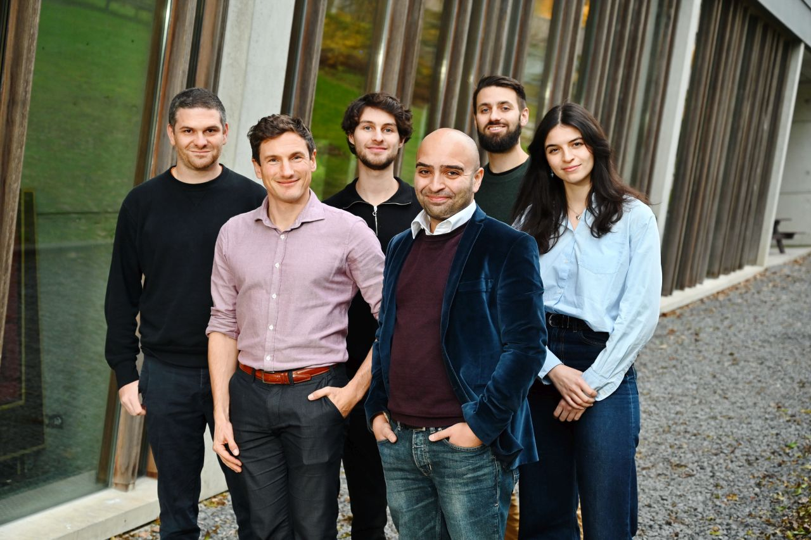

QuantaMap secures €1.4 million in funding to solve a major roadblock in the quantum revolution

Quantum computing has the potential to solve problems that are impossible to address with current technologies, in fields as diverse as material research, drug discovery, logistics, and beyond. But quantum chips are complex and difficult to produce. When they do not work as well as they should — and they often don't — there is no way to find out why, which component failed, and how to improve the production processes. This is one of the major roadblocks to scaling quantum chips.
QuantaMap has developed a novel microscope that will allow quantum researchers and chip manufacturers to closely inspect each chip to assure and improve its quality.
"Imagine if every quantum researcher and manufacturer had a finely tuned compass to navigate the uncharted quantum landscape of their chips; that's what we are creating." — Johannes Jobst, CEO
Others in this space offer traditional metrology solutions, but QuantaMap stands apart thanks to its combination of cryogenic scanning technology with quantum sensors, both specifically tailored for quantum applications. The tech is finely tuned to the specific issues that affect quantum chip performance and production yields, particularly around identifying the origin of losses and impurities at nanometre scale — by imaging local temperature rise, electric currents, and magnetic fields. It all happens at low temperatures to ensure the operating conditions of the chip are maintained during imaging.
"Our unique sensors, IP and cutting-edge, quantum-first approach put us years ahead of any emerging competitive techniques." — Johannes Jobst, CEO
The story so far
QuantaMap was founded in November 2022 by Johannes Jobst, Kaveh Lahabi, Milan Allan, and Jimi de Haan. Lahabi and his research team invented the quantum sensor at the heart of QuantaMap's products, at Leiden University. In the face of a clear need for diagnostic tools in quantum computing, the team moved quickly to fill this gap in the market.
QuantaMap aims to become the backbone of chip R&D and quality assurance in the quantum computing industry: the standard for ensuring that every qubit on every chip performs optimally.
Dutch quantum technologies investment fund QDNL Participations led the funding round which, combined with a grant for SMEs from the Quantum Delta NL foundation, will be used to further develop the technology and scale production capabilities as the startup prepares to go to market.
"By employing a unique combination of cryogenic scanning-probe microscopy and custom quantum sensors, QuantaMap is addressing a crucial challenge in the industry: the difficulty of producing reliable quantum chips. We're excited to support the QuantaMap team on their journey to provide chip diagnostics using quantum sensors." — Ton van 't Noordende, Managing Director, QDNL Participations